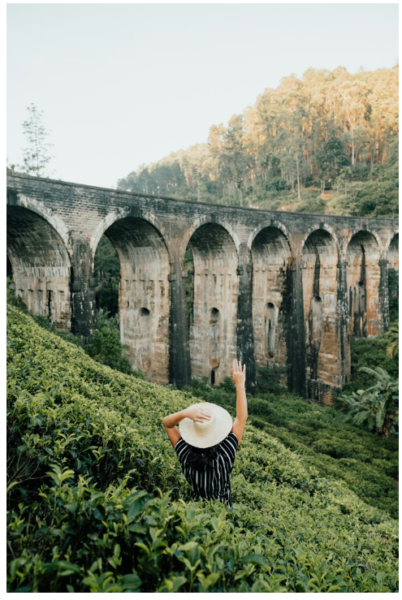
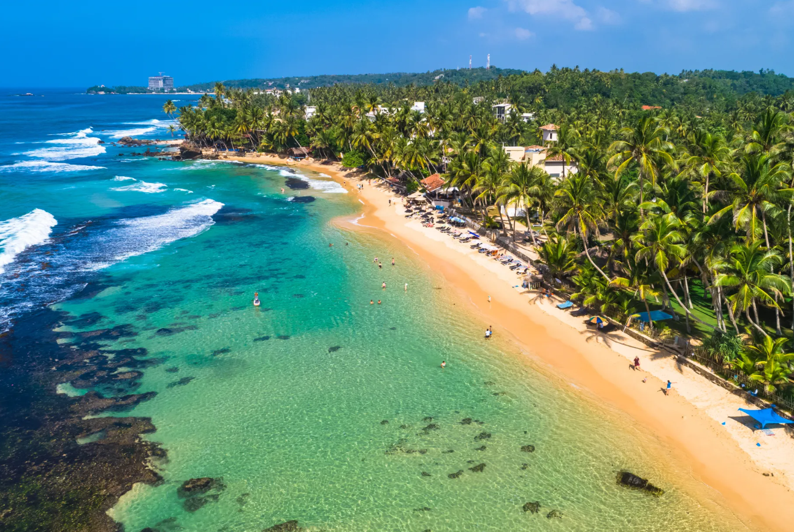

Sri Lanka is a breathtaking island where golden beaches
meet emerald jungles and ancient history blends seamlessly with modern
charm. From rolling tea-covered hills and cascading waterfalls to sacred
temples and vibrant coastal towns, every corner of the country tells a
unique story. Rich in culture, wildlife, and natural beauty, Sri Lanka
offers unforgettable experiences—whether it’s watching elephants roam
freely, surfing crystal-clear waves, or enjoying the warm smiles of its
people. This enchanting destination promises beauty, adventure, and
serenity all in one magical journey. 🌴✨
Most Beautiful Places in Sri Lanka
Ella

Ella, Srilanka
A charming hill town surrounded by lush green mountains,
waterfalls, and tea plantations. Famous for Ella Rock, Nine Arches
Bridge, and scenic train rides.
Sigiriya
Sigiriya, Srilanka
Home to the iconic Lion Rock Fortress, offering breathtaking
views, ancient frescoes, and remarkable ruins from Sri Lanka’s
royal past.
Nuwara Eliya
Nuwara Eliya, Sri Lanka
Known as Little England, this cool-climate town features rolling
tea estates, misty hills, colonial architecture, and serene
gardens.
Horton Plain National Park
Horton Plain National Park, Srilanka
A stunning plateau with cloud forests, rich wildlife, and the
dramatic cliff known as World’s End.
Kandy
Kandy, Srilanka
A cultural capital surrounded by hills and a peaceful lake, famous
for the Sacred Temple of the Tooth Relic and traditional Sri
Lankan culture.
Most Beautiful Beaches in Sri Lanka
Mirissa Beach
Mirissa Beach, Srilanka
Famous for its golden sand, calm blue waters, and whale watching.
A perfect mix of relaxation and beauty.
Unawatuna beach

Unawatuna Beach, Srilanka
A crescent-shaped bay with turquoise water, ideal for swimming,
snorkeling, and sunset views.
Bentota Beach
Bentota Beach, Srilanka
Known for its wide shoreline, palm trees, and water sports,
offering both adventure and serenity.
Arugam Bay
Arugam Bay, Srilanka
A world-class surfing destination with a laid-back vibe and
stunning coastal scenery.
Nilaveli Beach
Crystal-clear waters and soft white sand near Trincomalee, perfect
for peaceful beach escapes.